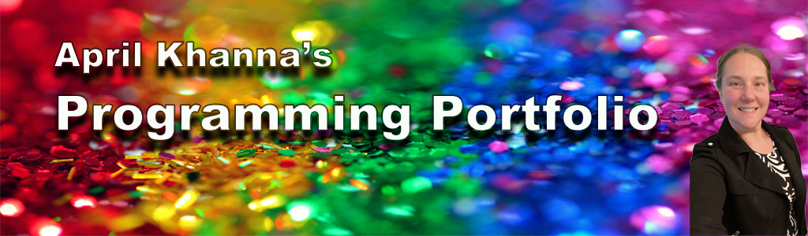

Welcome to this website! This is the first assignment in CSC 106: The Joy of Programming at the University of Rhode Island.
At this point it is a bare bones site, but with time we will build it up to be more informational and (hopefully) useful to someone.
Feel free to click around. Check out the About Me page to learn more about the creator.
Jump over to the JavaScripts to see updates any updates to the JS projects.
Keep checking back on that page as it will be updated over the semester.
Thanks for stopping by! Come back soon and see how much happens over the course of the semester.